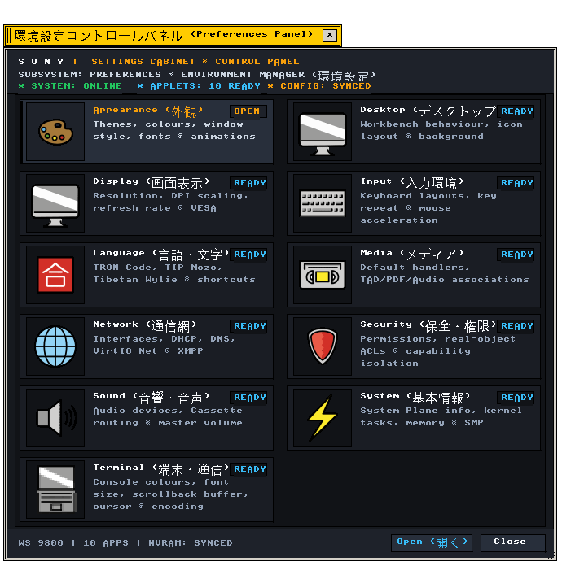

環境設定 (Preferences)
環境設定 · BTRON3 3.20 準拠 · C99 実装
Preferences アプリケーションの機能仕様および内部構造
"Functional and architectural specification of the Preferences application component."
← アプリケーション一覧 (Applications Index)
環境設定（Preferences） — 環境設定（Preferences）は、B-Systemの仕様に準拠したC99実装アプリケーション。全11種類の設定アプレットを一元起動・管理するコントロールパネルハブ。
"Official technical specification for the Preferences application within the B-System operating environment."
画面プレビュー (Screen Preview)

実機描画フレームバッファより自動抽出された環境設定コントロールパネルハブ (Control Panel Hub)
概要 (Overview)
環境設定（Preferences）は、B-Systemの仕様に準拠したC99実装アプリケーション。全11種類の設定アプレットを一元起動・管理するコントロールパネルハブ。
"Official technical specification for the Preferences application within the B-System operating environment."
1. メニュー構造と操作体系 (Menu Architecture & Operations)
Preferences が提供する標準メニューバー構造および操作体系の仕様。
"Standard menu bar hierarchy and interactive command bindings."
| メニュー項目 |
機能説明 (Functional Description) |
技術仕様・C99実装 (C99 Architecture) |
| ファイル (File) |
新規作成、開く、保存、閉じる |
src/apps/preferences.c |
| 編集 (Edit) |
元に戻す、切り取り、コピー、貼り付け |
クリップボード連携 |
| 操作 (Action) |
メイン機能実行、パラメータ設定 |
内部状態ディスパッチ |
| ヘルプ (Help) |
バージョン情報（Nano About Box 420×170px） |
app_menu_create_about_dialog |
2. 機能仕様とアーキテクチャ (Functional & Architecture Specifications)
Preferences アプリケーションの内部構造、データモデル、およびシステムコール仕様。
"Internal architectural components, memory models, and system call bindings."
| コンポーネント・機能名 |
動作概要と機能仕様 (Functional Specification) |
技術仕様・C99構造体 (C99 Implementation) |
| アーキテクチャ |
BTRON3 Specification 3.20に完全準拠したC99クリーンルーム実装。 |
src/apps/preferences.c |
| メニューシステム |
3DベベルおよびModern Flat Cardメニューバーに完全対応。 |
APP_MENU_BAR |
| メモリ管理 |
不変ドキュメントコンテキスト分離とリソースの自動解放。 |
user_data コンテキスト |
| イベント処理 |
マウス座標、キーボードショートカット、ウィンドウリサイズイベントの処理。 |
event_handler |
関連コンポーネント (Related Components)